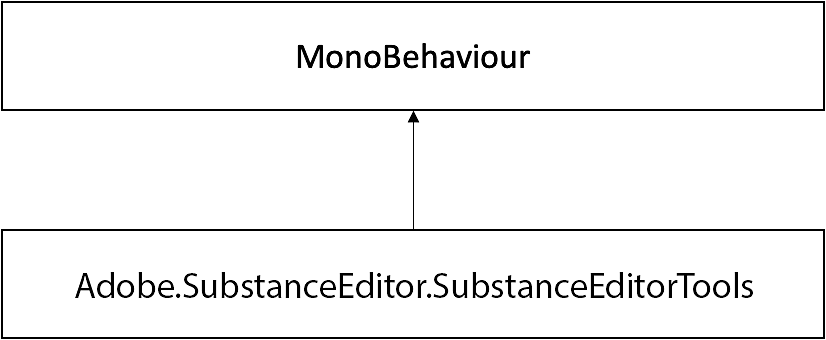

Tools and utilities for users to utilize on Editor scripts.
Inheritance diagram for Adobe.SubstanceEditor.SubstanceEditorTools:

• static void SetGraphFloatInput (SubstanceGraphSO graph, int inputId, float value)
Set graph float input.
• static void SetGraphFloat2Input (SubstanceGraphSO graph, int inputId, Vector2 value)
Set graph float2 input.
• static void SetGraphFloat3Input (SubstanceGraphSO graph, int inputId, Vector3 value)
Set graph float3 input.
• static void SetGraphFloat4Input (SubstanceGraphSO graph, int inputId, Vector3 value)
Set graph float4 input.
• static void SetGraphIntInput (SubstanceGraphSO graph, int inputId, int value)
Set graph int input.
• static void SetGraphInt2Input (SubstanceGraphSO graph, int inputId, Vector2Int value)
Set graph int2 input.
• static void SetGraphInt3Input (SubstanceGraphSO graph, int inputId, Vector3Int value)
Set graph int3 input.
• static void SetGraphInt4Input (SubstanceGraphSO graph, int inputId, int value0, int value1, int value2, int value3)
Set graph int4 input.
• static void SetGraphInputString (SubstanceGraphSO graph, int inputId, string value)
Set graph string input.
• static void SetGraphInputTexture (SubstanceGraphSO graph, int inputId, Texture2D value)
Set graph texture input.
• static void RenderGraph (SubstanceGraphSO graph)
Renders target graph and updates its assets.
• static string CreatePresetFromCurrentState (SubstanceGraphSO graph)
Creates a preset XML from the current state of the graph object.
• static List< SubstanceGraphSO > GetGraphs (this SubstanceFileSO fileSO)
Returns the list of SubstanceGraphSOs associated with a SubstanceFileSO.